|
LUCENTUM
En el denominado Tossal de
Manises se halla la ciudad romana de Lucentum, la antigua Alicante, desarrollada
a partir de un poblado ibérico. Está situada en la parte superior de una
elevación, un tossal de 38 metros de altura junto al mar y a 3,5km. del centro
de la ciudad moderna en el barrio de La Albufereta. Es uno de los yacimientos
arqueológicos más importantes de la Comunidad Valenciana que fue declarado
Monumento Histórico-Artístico en 1961. Conserva íntegra toda la superficie
urbana unos 30.000 m2. Las murallas tienen un perímetro de unos 600m.
El origen del poblamiento
humano podemos situarlo a finales del s. V o principios del s. IV a.e.c. pero
conocemos muy poco de la época ibérica, únicamente se han hallado ciertos
materiales cerámicos de datación un poco dudosa.
El lienzo de muralla más
antiguo data de finales del s. III a.e.c., se trata de una potente fortificación
dotada de grandes torres y en algunos tramos antemural. Esta muralla fija
definitivamente el perímetro de la ciudad.
|
En la etapa ibero-romana,
del s. II y parte del l a.e.c. se produce una interesante actividad constructiva
consistente en la creación de una nueva muralla reforzada con torres de sillares
que se adosa a la ya existente y se edifica en el lado oriental, la puerta de la
ciudad. A partir de mediados del s. I a.e.c. se inicia una remodelación del
trazado del viario urbano y por tanto un cambio de la configuración urbana a
intramuros. Durante el mandato de Augusto, Lucentum adquiere el rango de
municipium, condición documentada por las fuentes escritas y epigráficas, por
que pasa a gobernarse autónomamente con magistraturas e instituciones netamente
romanas. La ciudad presenta durante el s. I un periodo de esplendor y se inicia
la construcción del foro, dos edificios termales, la red de cloacas, la reforma
de la puerta oriental, y el derribo de las murallas que impedían la expansión
urbana facilitando así el desarrollo de grandes viviendas y edificios
públicos. Una Inscripción nos informa también de la construcción de un templo
financiado por un particular. En el s. II comienza un período de decadencia que
dará lugar en el s. III a su practica despoblación. Las razones hay que basarlas
más en cuestiones económicas internas y regionales, posiblemente a cambios de
los circuitos comerciales en beneficio de otras ciudades cercanas.
Ver:
Video
|
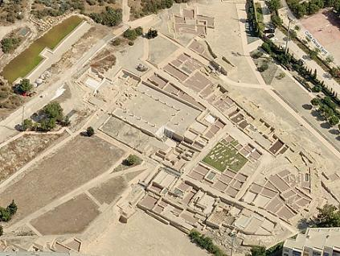
La Puerta Oriental
Era la puerta que comunicaba la ciudad con la Vía Augusta. La puerta que se
abría en el flanco oriental de la muralla sufrió diversas modificaciones a lo
largo de su historia. La primera de las puertas, del s. III a.e.c. La puerta que
vemos data del siglo I. Sería la puerta más importante de la ciudad.
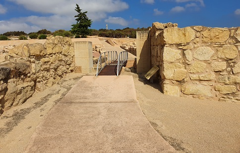
Mosaico Opus Signium
Mosaico de época tardo-republicana, posiblemente utilizado en construcciones
hidráulicas.
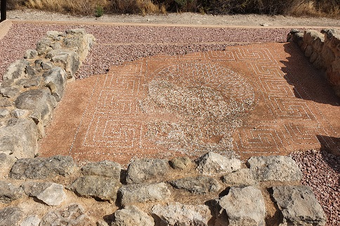
Calle de los Umbrales
Data del siglo I a.e.c. consecuencia de una remodelación urbanística. A
ambos lados de la calle se localizan las viviendas, excavadas parcialmente. Se
conservan cisternas y los umbrales de las puertas de acceso.
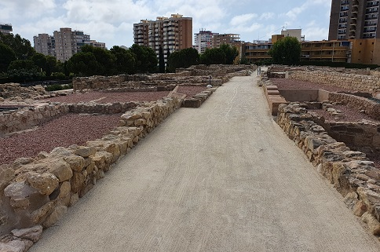
|
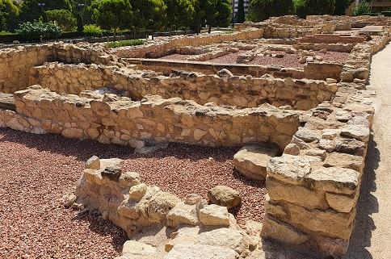 |
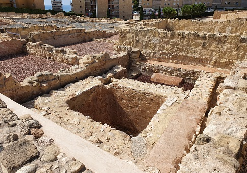 |
La Ciudad Pre-Romana
En esta parte de la ciudad en el interior de la muralla oriental, se
descubrieron construcciones iberas, siglo III a.e.c., Son construcciones
adosadas a la muralla. Destaca la torre VIII, que en la parte inferior estaría
dividida en tres cámaras. A la izquierda estaba la cisterna y un banco adosado a
la pared. En el piso superior estarían las catapultas. A la derecha de la torres
estarían unos almacenes o talleres.
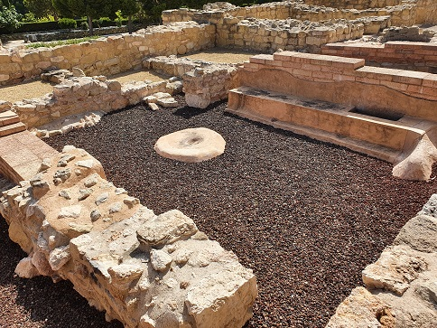
La Casa del Patio Triangular
Data del siglo III a.e.c., se conocen tres estancias de la casa,
destacándola central. La cisterna recogía el agua a través de una tubería
situada en el patio triangular. Capacidad para 20.000.-litros.
Calle de Popilio y Tienda
Era una de las principales arterias de la ciudad, en ella se construyeron
tabernaes y termas. Algunos tramos tenían alcantarillado.
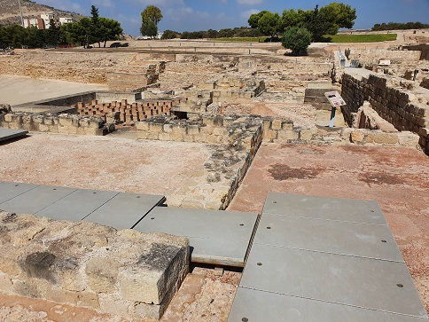
Horno Termas Muralla
Horno de combustión de leña que calentaba el agua y caldeaba las estancias
del caldarium y tepidarium.
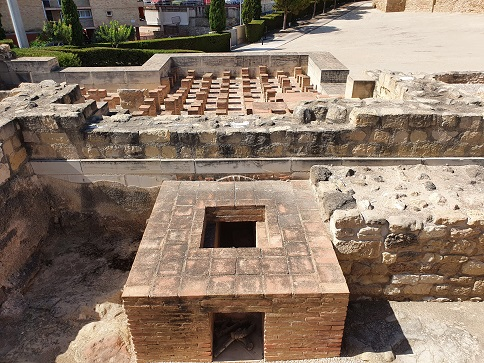
Termas Polibio
Las termas deben su nombre a la inscripción que recuerda “Marco Popilio Onyx
lo hizo de su dinero”. Polibio amplió un edificio anterior, dotándolo de un
nuevo vestuario-frigidario, en donde se alojó la inscripción. Marco Popilio Onyx
fue un liberto. En una inscripción conservada en el Museo de Bellas Artes de
Valencia, en donde se refiere que también pagó un templo en la ciudad, se da
cuenta de que perteneció a un colegio sacerdotal (los seviros augustales), cargo
reservado a los libertos...Las termas son del siglo I.
|
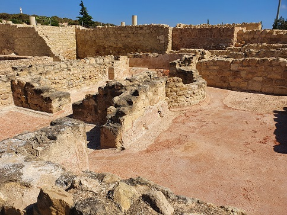 |
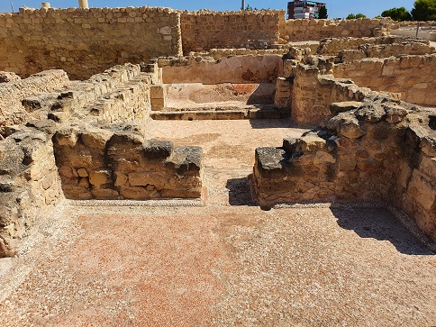 |
Ver:
Termas romanas
Huellas Puerta Foro
Son una serie de huellas humanas de calzado y de cabra o perro. Se localizan
en la puerta sudoeste de acceso al Foro. Datan mitad siglo I. Impresas
posiblemente a consecuencia de una lluvia.
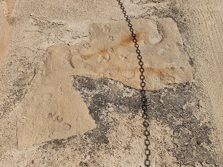
Fragmento de Escultura Monumental
Se localizó en la puerta nororiental del foro. La reproducción formaría
parte de una escultura imperial de bronce. Mano portando mango espada.
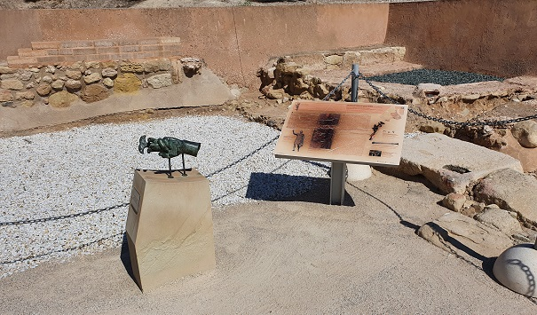
Foro
El foro se localiza en el centro de la ciudad. Consta de dos zonas, la plaza
rodeada por pórticos, y frente a ella el área sacra. El foro data del siglo I y
posteriormente fue ampliado anexionando edificios.
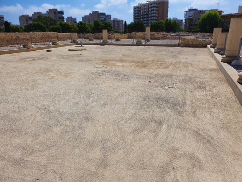
La Domus del Peristilo
Una de las casas más investigadas. Vivienda organizada alrededor de un
peristilo. Se conocen tres estancias, cubicula. Las que se proyectaron
sobrepasando la muralla y la torre, se corresponden con el oceus, el tablinium y
triclinum.
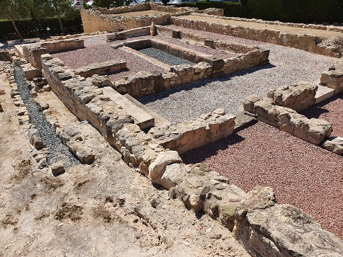
La Torre del Toro
Data del primer cuarto del siglo I a.e.c. Torre cuadrangular con zócalo
paramentado de sillería y cuerpo superior de adobe. Uno de los sillares muestra
la cabeza de un toro.
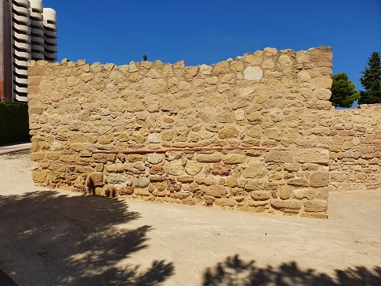
Murallas
La muralla data de finales del siglo III a.e.c., perimetrando la ciudad. En
una segunda fase en el primer cuarto del siglo I a.e.c, aprovechando parte del
sistema defensivo antiguo se refuerza la muralla.
|
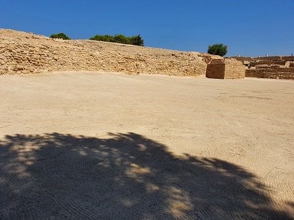 |
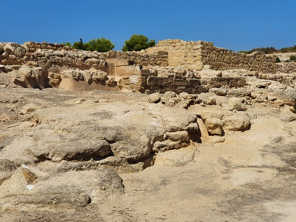 |
| |
|
|
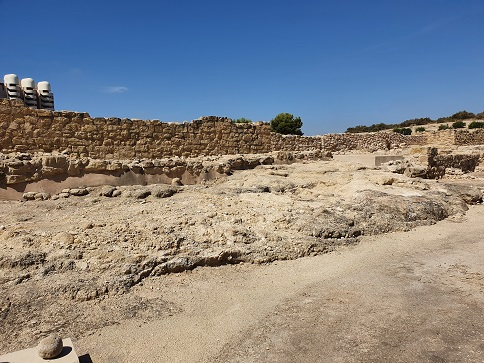 |
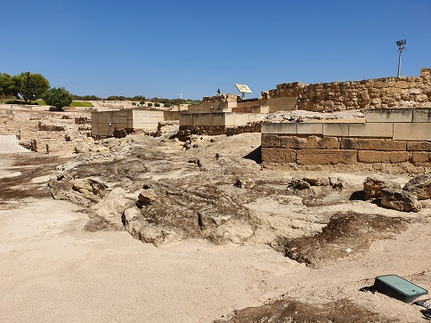 |
VILLA Y NECRÓPOLIS
CASA FERRER I
En el campo de golf de la Condomina se hallan los restos
arqueológicos, que están datados en un periodo que abarca desde el
s. I a.e.c. hasta mediados del s. V. El asentamiento consta de una villa con un área
industrial, una residencial y una pequeña necrópolis.
En la zona industrial de la villa existe un área con un gran patio
de trabajo, áreas de molienda, grandes hogares, pequeños hornos y
estancias domésticas.
En la zona residencial de la villa hay diferentes habitaciones y
patios privados. Destaca el complejo termal del s. II.
La necrópolis esta ubicada al sur, y se han excavado 16 sepulturas
bajo imperiales del siglo IV. El conjunto arqueológico tiene una
superficie de unos 8.000 m2.
La villa se puede visitar hablando con la
dirección del campo de golf.
VILLA ROMANA DEL
PARQUE DE NACIONES
|
Situada en la Avda. deportista
Miriam Blasco. Los restos datan del s. I a.e.c hasta el s. VI.
Se ha hallado una villa y una necrópolis. Se han excavado las
estructuras de la parte residencial, la pars urbana, habitaciones
estucadas con pinturas y una zona termal con hipocaustum. También se
ha hallado la zona industrial de la villa, la pars rustica o
torcularium. También apareció en las excavaciones un posible horno
de pan o de vidrio y un almacén. En parte de las estructuras existen
restos de una necrópolis de incineración. Este complejo tiene una
superficie de unos 15.000m2.
Enero de 2022, los arqueólogos
afirman que no estamos ante los restos de una simple villa romana,
sino ante todo un barrio periurbano de la ciudad ibero-romana de
Lucentum.
|
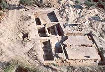 |
CERRO
DE LAS BALSAS-CHINCHORO
Estos restos se localizan en Avenida
Vía Parque y la C/ Flora de España. Los restos hallados pertenecen a la
cultura ibérica y romana.
Poblado ibérico amurallado, con posible doble recinto, presencia de
abundante cerámica, estancias domésticas, los materiales se datan entre el
s. VI y el III a.e.c.
La Villa está formada por varios muros y un posible pozo o balsa con
cazoleta interior y un suelo realizado con opus signinum.
En una primera campaña de excavación se descubrieron los restos de una
vivienda con un horno que data de época tardorromana; una tumba de
inhumación tardorromana cubierta de grandes losas de piedra planas; una
pista ibérica formada por pequeñas piedras y formada por una cubierta de
tierra apisonada con orientación NS en dirección al poblado ibérico del
Cerro de las Balsas; un fondo de cabaña con parte de una pequeña
estructura de piedras y dos silos del Bronce Tardío Final. En la segunda campaña de excavación
arqueológica, se halló una necrópolis de inhumación tardorromana con al
menos 11 individuos completos; importantes niveles de cenizas del Bronce
Medio Final relacionados con el fondo de cabaña de la 1ª campaña de
excavación; una necrópolis ibérica con al menos 9 incineraciones y una
posible estructura de cremación; restos de una villa romana de época
alto imperial con estructuras de cimentación y una zona de vertedero romano
vinculada a esta villa. Este conjunto arqueológico tiene una
superficie de unos 200.000m2.
EXCAVACIÓN ARQUEOLÓGICA DEL ARCHIVO MUNICIPAL
|
Se ha hallado una necrópolis
tardorromana con 40 enterramientos. Estos restos se pueden visitar en el
Archivo Municipal situado en C/ dels Llauradors, 3.
*******
Más info:
www.marqalicante.com
|
|